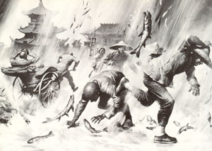

La pluie de poissons, telle que décrite par des habitants de Singapour

( ?) À Singapour, une secousse
tellurique fait trembler la ville. 3 jours de pluies diluviennes s'ensuivent. Lorsqu'elles se terminent, on
découvre dans les flaques d'eau couvrant une surface d'environ 20 ha des milliers de poissons-chats vivants ;
les malais et les Chinois qui les ramassent affirment les avoir vus tomber du
ciel, ce qu'aucun des européens qui rapportent la chose ne peut confirmer. Une fois asséchées par le
Soleil, les flaques révèlent d'autres poissons, morts, cette fois. Le débordement de la rivière Singapour
n'explique pas comment des poissons sont retrouvés dans des jardins dos épargnés par l'inondation.
Printemps
Aux USA, début de la guerre civile.
À New York, observation d'un ballon avec 2 hommes
dedans "A Balloon Astray", New York Times, 1861-10-05.